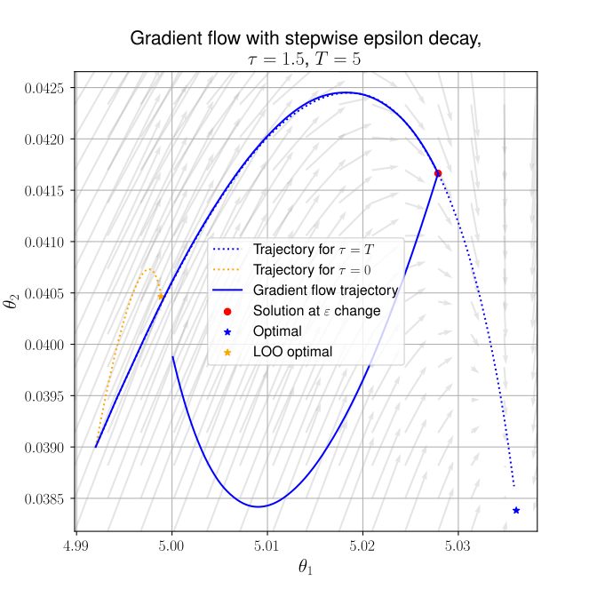
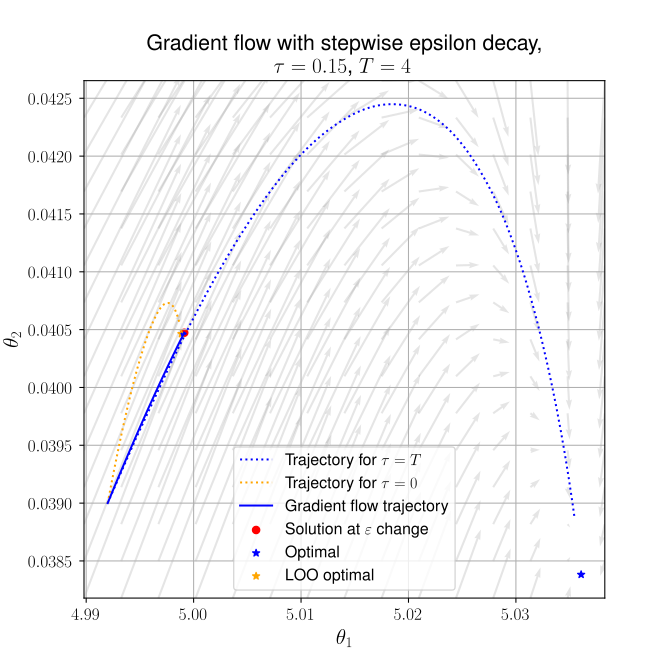
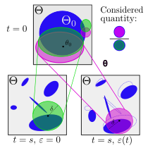
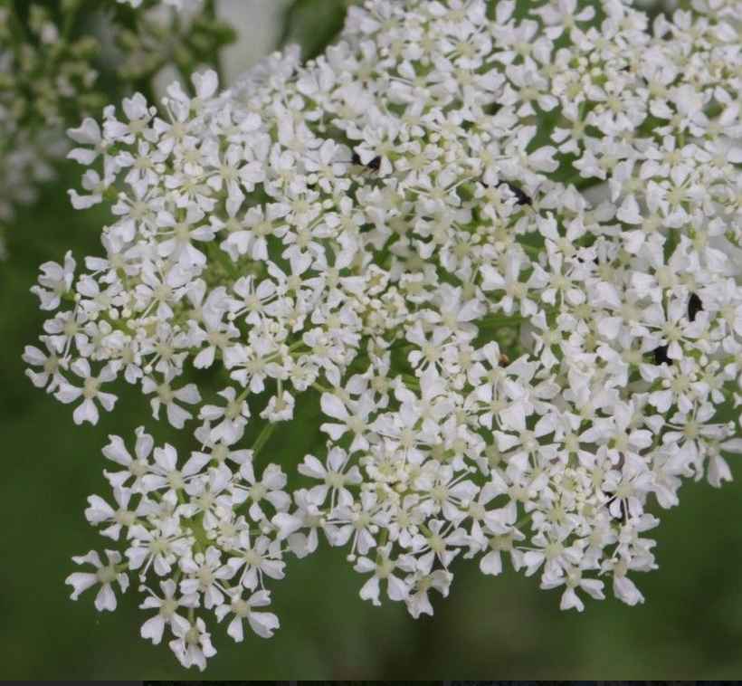
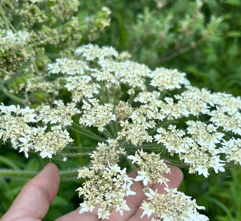
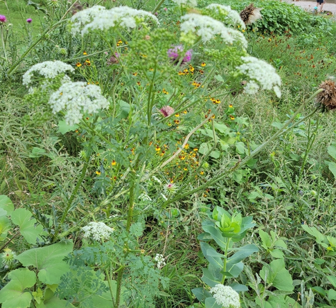

Influence Functions and Machine Unlearning


Influence Functions and Machine Unlearning


12 Mar 2026
Formation
Born (2001)
High school diploma in scientific subjects
Formation
University of Pisa
Bachelor’s and Master’s degree in Mathematics
(supervisor: Prof. Andrea Agazzi)
Formation
Hokkaido University
Master’s degree in Mathematics
(supervisor: Prof. Yuzuru Sato)
Formation
IROKO - IMAG
PhD in Mathematics (Funding: ANR VITE)
Supervisors: Joseph Salmon and Evgenii Chzhen
Presentation Outline
- Introduction and use cases for influence functions.
- Formal definition and discussion about machine unlearning.
- Possible applications to Pl@ntNet.
Influence Functions: Setting
Consider a generic machine learning framework:
- training dataset: \(D = \{z_i=(x_i,y_i)\}_{i=1}^n \subset (\mathcal{X}\times\mathcal{Y})^n\) ;
- model parameters: \(\theta \in \Theta \subseteq \mathbb{R}^d\) ;
- model: \(f: \mathcal{X} \times \Theta \to \mathcal{Y}\) (e.g. a neural network) ;
- loss function: \(\ell(z, \theta)\) (e.g. \(\ell(z, \theta) = (f(x;\theta) - y)^2\) for regression) ;
- empirical risk: \(L(\theta) = \frac{1}{n} \sum_{i=1}^n \ell(z_i, \theta)\) ;
Influence Functions: Definition
Define: \[ \hat{\theta}(\varepsilon, j) = \arg\min_\theta \sum_{i\neq j}^n \ell(z_i, \theta) + \varepsilon \ell(z_j, \theta); \] I will denote \(\hat{\theta}(1, j)= \hat{\theta}\) and \(\hat{\theta}(0, j) = \hat{\theta}_{-j}\).
Given an index \(j\), the influence function for the \(j\)-th training point is: \[ \mathcal{I}(z_j) = \left.\frac{d}{d \,\varepsilon}{\hat{\theta}(\varepsilon, j)}\right|_{\varepsilon=0}. \]
Influence Functions: Discussion
Interpretation: \(\mathcal{I}(z_j)\) measures the impact of \(z_j\) on the position of the optimal parameter.
If \(\ell\in C^2\), we can compute \(\mathcal{I}(z_j)\) using the formula: \[ \mathcal{I}(z_j) = - H_{\hat{\theta}}^{-1} \nabla_\theta \ell(z_j, \hat{\theta}) \] where \(H_{\hat{\theta}}\) is the Hessian of \(L\) at \(\hat{\theta}\).
Influence Functions: Discussion
Influence Functions are vector-valued.
However, we can also compute them on metrics:
- Utility: \(\sum_{z \in D} \nabla_\theta \ell(z, \hat{\theta})^\top H_{\hat{\theta}}^{-1} \nabla_\theta \ell(z_j, \hat{\theta})\);
- Fairness: \(\nabla_\theta f_{\textrm{fair}}(D, \hat{\theta})^\top H_{\hat{\theta}}^{-1} \nabla_\theta \ell(z_j, \hat{\theta})\), with \(f_{\textrm{fair}}\) a fairness metric (e.g., demographic parity);
Drawback: Computing \(H_{\hat{\theta}}^{-1}\) is very expensive.
Machine Unlearning
We want to remove the impact of \(z_j\) from \(\theta\) (neural network’s parameter).
We can unlearn \(z_j\) by Leave One Out (LOO) retraining, i.e. (fix a learning step \(\eta>0\)):
\[\begin{cases} \theta(t) = \theta(t-1) -\frac{\eta}{n}\sum_{i\neq j}\nabla_\theta \ell(z_i,\theta(t-1)) \\ \theta(0)=\theta_0 \end{cases}\]
Unlearning by Influence Functions
Influence functions approximate the unlearning of the training point \(z_j\) from the optimal parameter \(\hat \theta\). By Taylor expansion, we have: \[ \hat{\theta}(1, j) = \hat{\theta}(0, j) + \mathcal{I}(z_j) + O(\varepsilon^2) \] \[\implies \hat{\theta}_{-j} \approx \hat{\theta} - \mathcal{I}(z_j) \]
Descend to Delete


[“Rewind-to-Delete: Certified Machine Unlearning for Nonconvex Functions”, S. Mu, D. Klabjan, 2025]
Definition of Unlearning
Call \(\theta(t)\) the flow of the LOO solution and \(\tilde{\theta}(t)\) the flow of the unlearning procedure, both starting from \(\theta_0\in\Theta\).
We can have 3 distances:
- \(\frac12 \|\tilde{\theta}(T)-\hat\theta\|^2_\Theta\)
- \(\frac12 \|\tilde{\theta}(T)-\theta(T)\|^2_\Theta\)
- \(\frac12 \min_{t>0}\|\tilde{\theta}(T)-\theta(t)\|^2_\Theta\)
Future Directions
Unlearning via Fairness (assume data is distributed differently for each user \(s\in S\), i.e., \((X_s,Y_s)\sim P_s\)): \[ \mathbb{P}_X[f(X;\mathcal{M}(\mathcal{A},\mathcal{D},X_s))|X\notin X_s] = \mathbb{P}_X[f(X;\mathcal{M}(\mathcal{A},\mathcal{D},X_s))]. \]
Distributional Unlearning:
\[ \frac{\mathbb{P}_s[B_\delta(\tilde\theta(s))]}{\mathbb{P}_s[B_\delta(\theta(s))]} \ge 1-\alpha. \]

Possible Applications to Plantnet
Better Image Proposals
\(\xrightarrow{\text{Prediction}}\)


[Pl@ntNet; pics by: Barbara MAI − Tela Botanica, Tuspring]
Better Image Proposals
\(\xrightarrow{\text{Prediction}}\)

[Pl@ntNet; pics by: Philippe CATHERINE, Andrea Ang101]
Data Poisoning
Common Cowparsnip
Poison Hemlock
\(\xrightarrow{\text{Bad Prediction}}\)
Summary
My research aims to:
Apply influence functions to machine unlearning and data poisoning;
Explore different theoretical frameworks for generic unlearning;
[“If Influence Functions are the Answer, Then What is the Question?”, J. Bae, N. Ng, A. Lo, M. Ghassemi, R. Grosse, 2022]
[“Certified Data Removal from Machine Learning Models”, Guo, C., Zhang, L., Vorobeychik, Y., & Li, B., 2020]
[“Rewind-to-Delete: Certified Machine Unlearning for Nonconvex Functions”, S. Mu, D. Klabjan, 2025]